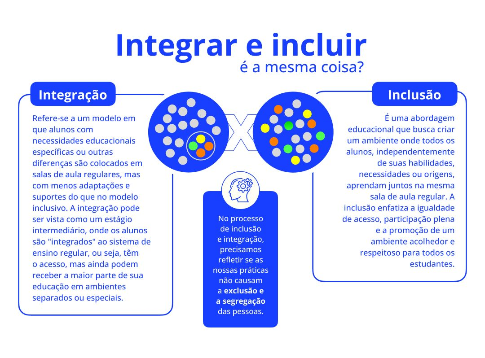
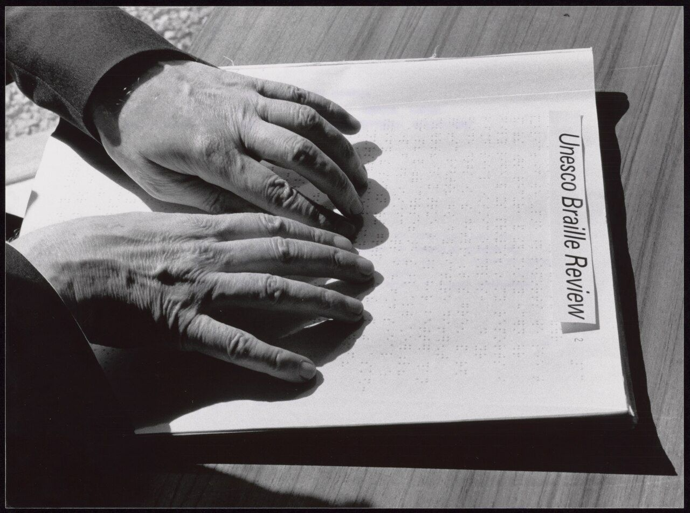

O que é educação inclusiva?
Educação inclusiva é a ideia de que todos os estudantes aprendem juntos, na escola comum, e que é a escola que se organiza para receber cada um: com deficiência ou sem, com transtornos de aprendizagem, com altas habilidades, de diferentes culturas e realidades.
“A educação inclusiva é um processo que amplia a participação de todos os estudantes no processo de aprendizagem e reduz a exclusão dentro e fora da escola.” — UNESCO
Integrar não é o mesmo que incluir
Na integração, o aluno com deficiência está na sala, mas é ele quem precisa “se encaixar” no que já existe. Na inclusão, a escola muda suas práticas, materiais e avaliações para que todos participem e aprendam de verdade.

Desenho Universal para a Aprendizagem (DUA)
O DUA (em inglês, Universal Design for Learning) foi desenvolvido pelo CAST, nos Estados Unidos. A proposta é planejar a aula desde o início pensando na diversidade, em vez de adaptar só depois que a dificuldade aparece. O que é essencial para alguns acaba sendo bom para todos.
| Princípio | Pergunta-chave | Exemplos em sala |
|---|---|---|
| Múltiplas formas de engajamento | Por que aprender? | Conectar com interesses, dar escolhas, metas curtas, trabalho em grupo. |
| Múltiplas formas de representação | O que aprender? | Texto + imagem + áudio + vídeo legendado + material concreto. |
| Múltiplas formas de ação e expressão | Como mostrar o que aprendeu? | Responder oralmente, desenhar, montar, gravar, digitar. |

Como adaptar uma atividade em 5 passos
- Defina o objetivo. O que o aluno precisa aprender? Esse objetivo não muda.
- Encontre a barreira. O que impede o aluno de chegar lá: o texto longo, a letra pequena, a escrita, o tempo?
- Escolha a estratégia. Etapas curtas, apoio visual, áudio, Libras, resposta oral, tempo extra…
- Aplique e observe. Ele conseguiu sozinho, com ajuda ou não concluiu?
- Registre. Anote o que funcionou: essa é a memória pedagógica que o IncluiEdu guarda para você.
Exemplo: Ciências, 5º ano
Antes
Leia o texto sobre o ciclo da água e explique, com suas palavras, o que são evaporação, condensação e precipitação. Depois, desenhe o ciclo.
Depois
- Ouça o texto 🔊
- Evaporação: a água vira vapor.
- Condensação: o vapor forma nuvens.
- Precipitação: cai a chuva.
- Monte o ciclo com as figuras.
Acessibilidade na sala de aula
Acessibilidade é eliminar barreiras: físicas, de comunicação, de informação e de atitude. Alguns recursos muito usados nas escolas brasileiras:

🤟 Libras
A Língua Brasileira de Sinais é reconhecida por lei desde 2002. Para estudantes surdos, ela é a primeira língua; o português escrito é a segunda.
⠿ Braille
Sistema de leitura e escrita tátil, com pontos em relevo, usado por pessoas cegas.
- Tecnologia assistiva: leitores de tela, ampliadores, teclados adaptados, pranchas de comunicação.
- Audiodescrição: descrição em áudio de imagens e vídeos para pessoas cegas ou com baixa visão.
- Legendas: essenciais para surdos e úteis para toda a turma.
- Comunicação Alternativa (CAA): símbolos e pranchas para quem não se comunica pela fala.
- Leitura ampliada e alto contraste: para estudantes com baixa visão.

Conhecendo cada aluno
Cada pessoa é única: um diagnóstico não define tudo. Ainda assim, algumas estratégias costumam ajudar:
| Perfil | Estratégias que costumam ajudar |
|---|---|
| TDAH | Instruções curtas, etapas numeradas, pausas, lugar com menos distrações, metas pequenas. |
| TEA (autismo) | Rotina previsível, antecipar mudanças, linguagem objetiva, apoio visual, respeito à sensibilidade sensorial. |
| Dislexia | Áudio, fonte maior e espaçada, palavras-chave em destaque, avaliação oral. |
| Deficiência visual | Fonte ampliada, alto contraste, Braille, audiodescrição, materiais táteis. |
| Surdez / deficiência auditiva | Libras e intérprete, legendas, imagens, falar de frente para o aluno. |
| Deficiência física | Acessibilidade do espaço, resposta oral ou digital, tempo adicional. |
| Deficiência intelectual | Vocabulário simples, material concreto, exemplos do cotidiano, repetição com variação. |
| Altas habilidades | Desafios extras, projetos de aprofundamento, autonomia na pesquisa. |
O que diz a lei no Brasil
- Constituição Federal (1988), art. 205 e 208: a educação é direito de todos, e o atendimento educacional especializado deve ser oferecido preferencialmente na rede regular.
- LDB – Lei nº 9.394/1996: dedica um capítulo à Educação Especial como modalidade transversal.
- Lei nº 10.436/2002: reconhece a Libras como meio legal de comunicação e expressão.
- Política Nacional de Educação Especial na Perspectiva da Educação Inclusiva (2008): orienta a matrícula na escola comum com AEE.
- Convenção da ONU sobre os Direitos das Pessoas com Deficiência: promulgada no Brasil pelo Decreto nº 6.949/2009, com status de emenda constitucional.
- Lei nº 12.764/2012 (Lei Berenice Piana): garante direitos da pessoa com Transtorno do Espectro Autista.
- Lei nº 13.146/2015 (Lei Brasileira de Inclusão): assegura sistema educacional inclusivo em todos os níveis e proíbe cobrança adicional por adaptações em escolas particulares.
- Lei nº 14.254/2021: prevê acompanhamento integral para estudantes com dislexia, TDAH ou outro transtorno de aprendizagem.
Vídeos recomendados
Seleção de vídeos em português sobre inclusão escolar e adaptação de atividades. O vídeo só carrega quando você clica.
Caminhos para a inclusão escolar
UNICEF Brasil • websérie sobre educação inclusiva e trajetórias de sucesso escolar.
Como adaptar atividades e materiais na educação inclusiva
Izabel Andrade (EduSER) • adaptação curricular na prática, sem reduzir o objetivo.
Como ter menos trabalho na hora de adaptar atividades
Leandro Rodrigues (Instituto Itard) • partir do que o aluno já sabe fazer.
Glossário
- AEE
- Atendimento Educacional Especializado: apoio complementar, geralmente na sala de recursos, no contraturno.
- PEI
- Plano Educacional Individualizado: registro de metas e estratégias para um estudante.
- DUA
- Desenho Universal para a Aprendizagem: planejar para a diversidade desde o início.
- Tecnologia assistiva
- Recursos e serviços que ampliam a autonomia de pessoas com deficiência.
- Adaptação razoável
- Ajuste necessário e adequado para garantir igualdade de oportunidades.
- Sala de recursos multifuncionais
- Espaço da escola com materiais e equipamentos para o AEE.
- Capacitismo
- Preconceito ou discriminação contra pessoas com deficiência.
- CAA
- Comunicação Aumentativa e Alternativa: pranchas, símbolos e apps de comunicação.